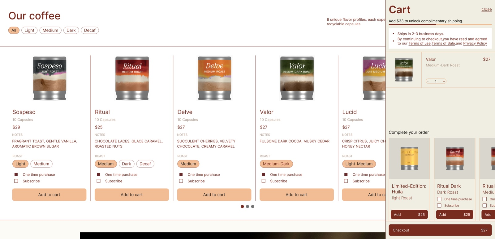
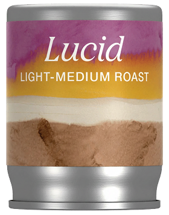
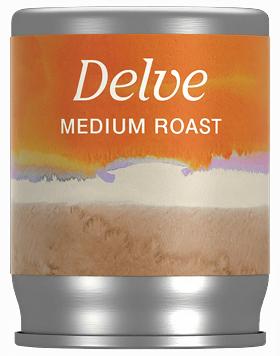
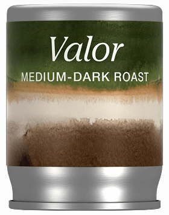

☕ 0 → 1 · 品牌官网 & 电商
KOVA 咖啡品牌官网

KOVA 咖啡品牌官网
与在线商城
为一个主打「冷萃」的家用咖啡机与胶囊品牌 KOVA 从 0 到 1 设计的品牌官网： 既要讲清楚「一键冷萃」的产品故事，又要承载咖啡机、胶囊、糖浆、礼盒与配件的完整电商链路， 把一次购买，沉淀为可持续的订阅复购关系。
为一个主打「冷萃」的家用咖啡机与胶囊品牌 KOVA 从 0 到 1 设计的品牌官网： 既要讲清楚「一键冷萃」的产品故事，又要承载咖啡机、胶囊、糖浆、礼盒与配件的完整电商链路， 把一次购买，沉淀为可持续的订阅复购关系。
KOVA（隶属 The Cumulus Coffee Company）是一个专注「冷萃」的家用精品咖啡品牌—— 一台一键出杯的冷萃咖啡机，搭配水彩风格的铝制胶囊。此前品牌主要依赖第三方零售渠道， 客单价高的机器缺乏品牌化的销售场景，复购率高的胶囊也无法沉淀为订阅。 他们需要一个自有的品牌官网 + 在线商城，既能把「冷萃专家」的故事讲透，又能高效完成从种草到复购的转化。
在「品牌温度」与「转化效率」之间找到平衡——既要让人记住这个冷萃品牌，又要顺畅地买下机器、订阅胶囊。
高客单价的咖啡机需要充分的品牌叙事与信任建立，又不能让用户在长页面里迷路、错过购买入口。
机器、胶囊、糖浆、礼盒、配件五大品类，规格 / 烘焙度 / 单次或订阅交织，信息架构必须清晰可扩展。
胶囊是高频耗材，如何用「订阅」「免邮门槛」「追加销售」把单次购买变成持续关系。
市面咖啡品牌多偏「热、暖」，KOVA 主打冷萃，要在暖色调里做出清冽、精致、专属冷萃的差异化气质。
围绕两类核心用户展开——他们的动机决定了首页叙事顺序与商城的优先级。
全站导航围绕 The Machine / Coffee / Shop / Commercial 展开， 把用户从「了解品牌」一路引导到「下单复购」，每一步都尽量减少跳转与决策负担。
Hero 主推咖啡机，串联三种冷萃、口碑与产品家族。
机器 / 胶囊 / 糖浆 / 礼盒 / 配件分区，按烘焙度筛选。
风味档案 + 溯源故事 + 单次 / 订阅切换，一键加购。
侧边抽屉常驻，免邮进度 + 追加销售，一键结账。
一套围绕「暖奶油底色 + 砖红行动点 + 水彩风味」展开的视觉语言，保证官网与商城在 30+ 页面里的一致性。
三个关键页面构成完整体验闭环。下面是真实设计稿，可在窗口内滚动浏览整页。
以咖啡机为主角的 Hero 开场，依次铺陈三种冷萃模式、品类导航、用户口碑、「在家也能当咖啡师」的生活方式，最后用产品家族网格收口。

↑ 在窗口内向下滚动，查看完整首页
机器、胶囊、糖浆、礼盒、配件分区陈列，按烘焙度（Light / Medium / Dark / Decaf）筛选，统一的产品卡承载价格、风味与「单次 / 订阅」选项。

↑ 在窗口内向下滚动，查看完整商城
以 Ritual 为例：顶部完成「选烘焙度 → 单次或订阅 → 加购」的决策，下方用「种植 → 烘焙 → 冲煮 → 校准」的溯源叙事建立信任，再以真实评价（4.9 / 14 条）收尾。

↑ 在窗口内向下滚动，查看完整商品页

购物车做成常驻侧边抽屉，加购即弹出，无需跳页。顶部用「再凑 $33 解锁免邮」的进度提示，自然提升客单价。
每一款胶囊都有专属的水彩标签与风味档案，让「选咖啡」像挑选一幅画，强化品牌的精致与可收藏感。






区别于大多数偏「热饮」的咖啡品牌，KOVA 把「exclusively for brewing cold」做成核心主张， 在商品页用「种植 → 烘焙 → 冲煮 → 校准」四步溯源讲清楚专业度。
做对了什么：把「冷萃」作为唯一主张贯穿全站，再用一套暖色 + 水彩的视觉语言统一品牌、商城与商品三层； 电商侧用订阅、免邮门槛与购物车追加销售，把高频胶囊的复购价值显性化。
如果重来：会更早建立设计 Tokens 与组件库，让限定款换肤、节庆礼盒等扩展成本更低； 也会补充真实的可用性测试，验证长首页的购买入口与 PDP 的订阅转化。
收获：这是一次完整的品牌官网 + 电商 0→1 实战——从理解商业目标（卖机器、做订阅）， 到落地为可交付的页面与规范，让我更具体地理解「设计如何同时服务品牌与生意」。